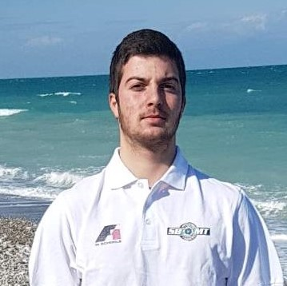

The Team
-

Mellios Nikos
Team Leader & Resources Manager
Nikos, being by his nature a leading and organizing personality, took over the captain’s responsibilities and did not disappoint the team. He offered clear orders and did everything efficiently, while because of his acquaintances, he was placed in the field of finding resources, providing the best materials. In this point, obligatory was the aid of Pericles (mentioned underneath).
-

Aidinopoulos Perikles
Team Leader & Resources Manager
Pericles, as Formula 1 lover and having admirable knowledge around computers, was decided to assume the roles of Design & Construction Engineer. About the former duty, in collaboration with the previous members, he managed to design the best car ever made for our team. In addition, he was compulsory for the construction of a durable car.
-

Kapsis Nikolaos
Graphic Designer & Marketing Manager
Nikolas, being privileged with creativity and imagination, is responsible for the appearance and the logo of our team. Hard work fructified, whilst at the same time finding sponsors and come in contact with the donators were that efficient, as is shown below.
-

Katsonis Andreas
Construction Engineer & Support Member
Andreas, aiming Pericles as being in charge of Construction Engineer, shaded the Supporting role that he assumed, setting up the foundation for a detailed and accurate assemblage. Alongside, he was offering his services whenever team was in need.
-
Athanasoulis George
Communication Manager & Alternative Member
George, using his communication gift, was the one that organized with success our actions, while his is keen on social media, achieving a smooth and careful management. The results were obviously satisfying. Along with Andreas, they organized SBMT’s timetable.
-
Be Part
Of Our
Story!